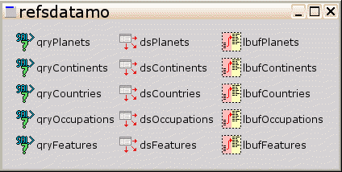
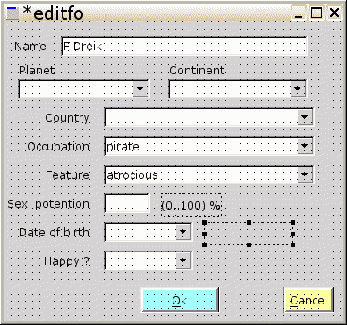
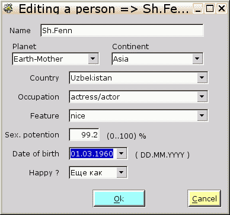

Редактируется, как правило, одна таблица, остальные же таблицы в лучшем случае поставляют для нее данные в виде ссылок.
Видоизменяем запрос, так как для редактирования нам нужны значения ссылок на другие таблицы, а также нужно знать ключи строк самой редактируемой таблицы ( чтобы случайно не спутать строки при изменениях ) :
Меняем :
qryPersons -> SQL:=
a.id, /* ключевой столбец */
a.feature_id,
a.occupation_id,
a.country_id,
a.descr,
a.sexual_potention ,
a.photo,
b.descr as country,
c.descr as occupation,
d.descr as feature,
a.if_happy,
a.dateofbirth
from persons a left outer join
countries b on a.country_id=b.id left outer join
occupations c on a.occupation_id=c.id left outer join
features d on a.feature_id=d.id
order by a.id;
Щелкаем на "Test" -> должно быть "ОК" .
Итого - добавлены поля:
| a.id | ключ редактируемой таблицы ( persons ) |
| a.feature_id | ссылка на таблицу "features" |
| a.occupation_id | ссылка на таблицу "occupations" |
| a.country_id | ссылка на таблицу "countries" |
Эти поля - целочисленные ( integer ), ибо почти 100% именно такими являются номера строк таблиц.
Отображать будем те же поля, что и ранее:
Непосредственно редактироваться не будут только поля :
Выключаем запрос, так как меняется схема данных :
qryPersons.active:= false
и назначаем их persistent-полями типа "1" (ненастраиваемыми):
QryPersons->controller->fields.count->[...] -> открывается диалог, в котором - по очереди из незатененных ( доступных ) полей справа, выбираем "id" и "photo" и жмем кнопку со стрелкой влево (переносим поля из автосоздаваемых ( “fielddefs” ) в разряд постоянных – “fields” ), и закрываем диалог.
Остальные поля будут учавствовать в отображении и редактировании, поэтому для облегчения жизни ( чтобы работать с ними не в коде, а через дизайнер ) - сделаем их persistent-полями типа "2" ( визуально-настраиваемыми ) :
Роняем эти поля из палитры DBF на “grdPerson” , под названиями состветствующих столбцов таблицы :
Тип в DBF-палитре |
Свойство "FieldName" | Свойство "name" |
Поле в запросе ( для справки ) |
|---|---|---|---|
Tmsedtringfield |
feature | fldFeature |
d.descr as feature |
Tmsedtringfield |
occupation | fldOccupation |
c.descr as occupation |
Tmsedtringfield |
country | fldCountry |
b.descr as country |
Tmsedtringfield |
descr | fldName |
a.descr |
Tmsefloatfield |
sexual_potention | fldSexPotention |
a.sexual_potention |
Tmsebooleanfield |
if_happy | fldHappy |
a.if_happy |
Tmsedatefield |
dateofbirth | fldDateOfBirth |
a.dateofbirth |
Tmselongintfield |
feature_id | fldFeatureId |
a.feature_id |
Tmselongintfield |
occupation_id | fldOccupationId |
a.occupation_id |
Tmselongintfield |
country_id | fldCountryId |
a.country_id |
Свойство "Dataset:= qryPersons" у всех этих полей, поля нужно настраивать поочередно.
Также:
Примечания :
Теперь можно включить запрос :
qryPersons.active:= true
чтобы увидеть появившиеся данные в таблице. Если теперь запустить программу (через F9), то увидим, что она пока ничем не отличается от предыдущей прораммы просмотра. Но зато мы сейчас включили в программу точки редактирования - модифицировали запрос и создали persistent-поля.
Каждую из записей можно :
Инициировать эти действия будем :
Раз у нас три способа инициирования, значит - опять понадобятся "taction". Уроним на таблицу три компонента "GUI -> taction" :
| Name | onexecute |
|---|---|
| actEdit | editformshow |
| actAdd | addformshow |
| actDelete | deleterecord |
Для реализации способа (1) - увеличим место внизу формы, уроним туда уроним три кнопки (Widget -> tbutton ), и увяжем их с "taction" :
Name |
Action |
Caption |
|---|---|---|
btnEdit |
actEdit |
&Edit.. |
btnAdd |
actAdd |
&Add.. |
btnDelete |
actDelete |
&Delete.. |
Свойство 'anchor" всех трех кнопок установим [an_bottom:= true, an_right:= true, остальные - false], чтобы эти кнопки держались первоначального зазора с нижним краем формы при изменении ее размера.
Назначим новым кнопкам ранее принятый "кнопочный" стиль :
удерживая клавишу "Ctrl", выбираем все три кнопки "btnEdit", "btnAdd" и "btnDelete", далее идем в редактор свойств :
frame->[...]
- template:= ftButtons
видим, что у всех кнопок появился заметный бордюрчик, плюс все они кнопки окрасились с один цвет (светло-желтый, назначенный кнопкам "закрыть/отменить/завершить" ). Исправим это, приняв, что :
- цвет кнопок "редактировать" ( Edit ) -> светло-зеленый (cl_ltgreen)
- цвет нопок "добавить" ( "Add" или "Append" ) -> светло-синий (cl_ltblue)
- цвет нопок "удалить" ( Delete ) -> светло-красный (cl_ltred)
btnEdit :
- template
- colorclient:= cl_ltgreen
выглядит темноватым, поэтому выберем не из палитры, а через диалог :
- colorclient -> [...]
- red:= 200
- green:= 255
- blue:= 200
btnAdd :
- template
- colorclient:= cl_ltblue
тоже выглядит темноватым, поэтому выберем не из палитры, а через диалог :
- colorclient -> [...]
- red:= 200
- green:= 200
- blue:= 255
btnDelete :
- template
- colorclient:= cl_ltred
тоже выглядит темноватым, поэтому выберем не из палитры, а через диалог :
- colorclient -> [...]
- red:= 255
- green:= 200
- blue:= 200
Примечания :
Для реализации способа (2) - уроним на таблицу компонент :
Widget-> tpopupmenu
и скажем таблице "при клике правой кнопкой - вызывай это меню" :
grdPersons.popupmenu:= pupPersons
Для реализации способа (3) - просто назначим свойство "shortcut" объектов "taction" :
Способ (4) у нас уже реализован - см. буквы после "&" в свойствах "caption".
А теперь, по порядку: Так как имеющаяся таблица позволяет только просматривать данные, то для их изменения будем использовать отдельную форму = редактор записи.
File -> New -> Form -> Simple Form : сохранить файл под именен "editform" -> создается "editfo" типа "teditfo". "Editfo" нельзя переименовывать.
В нижнюю часть этой формы роняем две кнопки "Widgets->tbutton" :
Левая кнопка:
Правая кнопка:
Раз появились новые кнопки - значит, пора им назначить наш "кнопочный" стиль. Кнопка "btnCance", как кнопка отмены должна иметь светло-желтый цвет ( по-умолчанию для кнопок ), а кнопка "btnOk" ( кнопка готовности/подтверждения ) - пусть будет светло-цианового цвета :
btnOk :
- frame->[...]
- template:= mainfo.ftButtons
- colorclient:= cl_ltcyan
btnCancel :
- frame->[...]
- template:= mainfo.ftButtons
Примечания :
- обратите внимание, что мы прописали кнопочный стиль, созданный и описанный на другой форме !
Непустые значения "modalresult" говорят о том, что щелчок на такой кнопке закрывает форму, после чего функция показа формы <Форма>.show(true) ( будет использована ниже по тексту ) вернет соответствующее значение "mr_ok" или "mr_cancel", которое затем можно использовать для принятия решения.
Добавление новой записи может быть реализовано как добавление ( append ) пустой записи с последующим редактированием ее полей, то есть - мы можем использовать одну и ту же форму для редактирования и добавления данных .
Эта форма должна показываться по команде на редактирование ( или добавление ) - в методах объектов "actEdit" и "actAdd" , находящихся на основной форме "mainfo":
Изменения в файле "main.pas"
procedure tmainfo.editformshow(const sender: TObject);
begin
try
with qryPersons do begin
edit; // переводим "qryPerson" в режим редактирования текущей записи
application.createform(teditfo,editfo); // модальный показ "editfo"
// показать, что именно редактирование, а не добавление
editfo.caption:= ' Editing a person => '+ fldName.asstring;
case editfo.show(true) of
mr_ok: begin // "editfo" закрыта кнопкой с кодом "mr_ok"
// здесь будет код записи в БД + первыборки
end else begin // "editfo" закрыта кнопкой с кодом, отличным от "mr_ok"
cancel; // отказаться от подготовленных к записи в БД изменений
end;
end;
end;
finally
editfo.free; // при любом исходе - удалить "editfo" из памяти
end;
end;// добавить метод через двойной клик в поле "actAdd->onexecute"
// Процедура добавления новой записи :
//
procedure tmainfo.addformshow(const sender: TObject);
begin
try
with qryPersons do begin
// вставить в редактируемую таблицу пустую строку,
// и тут же войти в режим ее редактирования
append;
application.createform(teditfo,editfo);
editfo.caption:= ' Adding a new person';
case editfo.show(true) of
mr_ok: begin
// здесь будет код записи в БД + первыборки
end else begin
cancel; // отказаться от добавления
end;
end;
end;
finally
editfo.free;
end;
end;
Как видно, эти две процедуры отличаются только :
Удаление текущей записи не требует никаких дополнительных форм - достаточно обойтись выводом диалога для подтверждения решения на удаление. Поэтому - еще изменения в файле "main.pas" :
implementation
uses
main_mfm,
editform, // для доступа к "editfo"
msewidgets // чтобы можно было использовать диалоги "showmessage", "askyesno", ..
;...( процедуры редактирования и добавления )
procedure tmainfo.deleteprson(const sender: TObject);
begin
if askyesno('Are you a nut ???','Deletion request',mr_no,200) then begin
with qryPersons do begin
delete;
end;
end;
end;
Сервис редактирования полей текущей записи базовой таблицы ("persons") обеспечивается следующими компонентами палитры "DB" :
Примечание:
Когда следует использовать числовые поля вместо строковых ( ведь и числа, и буквы, по своей природе - символы ) ? Ответ - тогда, когда их значения могут быть использованы в арифметических выражениях.
Перечисленные компоненты напрямую меняют значение соответствующего поля строки БД. Но бывает и другая потребность - загрузить список значений из БД, но, после выбора в списке - не записывать выбранное значение обратно в БД, а использовать по другому - в процедуре фильтрации, и т.п. Пример такого компонента - "tenumeditlb". Это компонент у нас будет использован для сужения поиска страны по выбранному атрибуту "континент".
Компоненты "tdbenumeditlb" и "tenumeditlb" (как и все с именами типа
"t..(datatype)lb" ) нуждаются в специальном компоненте для хранения списков значений -
так называемых "lookup buffers". Если такой "buffer" заполняется из БД - это компонент "tdblookupbuffer",
а если вручную - "tlookupbuffer" .
Очень важный сервис этих "буферов" - синхронизированность нескольких
столбцов данных, даже разного типа, что позволяет выбрать, например, текстовый столбец для заполнения списка
текстовых значений ( названий стран и т.п.), а в момент выбора в этом списке - зафиксировать
соответствующий выбранному названию станы ключ строки в таблице стран, и т.п.
Теперь надо решить - откуда брать данные для заполнения этих "буферов" ( список атрибутов ), Неплохо бы также предусмотреть возможность редактирования содержимого этих списков - для каждого из которых потребуется своя отдельная форма.
Итого, получается, что одни и те данные могут потребоваться в разных местах программы, а именно - в виде списков для редактирования данных о персоне (в таблице "persons" ), и в виде таблиц для редактирования самих списков. Поэтому эти списочные данные :
Для этих целей идеально подходят так называемые "data modules".
File -> New -> Form -> Data Module : сохранить файл под именен "refsdatamodule" -> создается "refsdatamo" типа "trefsdatamo". "refdatamo" нельзя переименовывать.
Далее - набросать на форму дата-модуля следующие компоненты с палитры "DB" :
tmsesqlquery (1) :
tmsedatasource (1) :
tdblookupbuffer (1) :
tmsesqlquery (2) :
Следующий код - для гарантии того, что данные о планетах будут доступны перед выборкой данных о континентах ( описания континентов содержат сссылки на планеты ) :
Установить "refsdatamodule.pas-> qryContinents -> beforeopen:= qrycontinentsbeforeopen", и описать код :
procedure trefsdatamo.qrycontinentsbeforeopen(DataSet: TDataSet);
begin qryPlanets.active:= true;
end;Это код нужен в том случае, если список планет может измениться во время использования списка континентов (предусмотрено редактирование планет).
tmsedatasource (2) :
tdblookupbuffer (2) :
Несколько слов о "lbufContinents" :
tmsesqlquery (3) :
Следующий код - для гарантии того, что данные о континентах будут доступны перед выборкой данных о странах ( описания стран содержат сссылки на континенты ) :
Установить "refsdatamodule.pas-> qryCountries -> beforeopen:= qrycountriesbeforeopen", и описать код :
procedure trefsdatamo.qrycountriesbeforeopen(DataSet: TDataSet);
begin qryContinents.active:= true;
end;Этот код нужен в том случае, если список континентов может измениться во время использования списка стран ( если предусмотрено редактирование планет ).
Используемый как параметр тип "TDataSet" определен в файле "db.pp" из комплекта FPC, поэтому этот файл нужно добавить в "refsdatamodule.pas" -> interface -> uses :
interface
uses
msegui,mseclasses,mseforms,msesqldb,msedb,mselookupbuffer,
db
;Почему "interface" часть ? Потому что "refsdatamodule -> qryCountries -> beforeopen" добавила объявление "qrycountriesbeforeopen" сперва в interface-часть refdatamodule.pas
tmsedatasource (3) :
tdblookupbuffer (3) :
Несколько слов о "lbufCountries" :
tmsesqlquery (4) :
tmsedatasource (4) :
tdblookupbuffer (4) :
tmsesqlquery (5) :
tmsedatasource (5) :
tdblookupbuffer (5) :
Примечания :
pfInKey -> нужно для автоматической записи ВСЕЙ отредактированной строки в БД; данный параметр говорит "данное поле несет в себе ключ ( или один из ключей строки), то есть однозначно ее идентифицирует" ; смысл - чтобы не испортить другую строку, нужно всегда знть, где находишься
pfInUpdate -> нужно для записи нового значения данного поля в момент автоматической записи всей строки, иначе изменения при редактировании будут проигнорированы
UsePrimaryKeyAsKey:=False -> приказ не пытаться автоматически определить поле с уникальным ключом, ведь мы сами указываем ключевое поле, см. pfInKey
integerfields.* -> поля с ключами и ссылками на ключи
textfields.* -> поля с текстовыми значениями, связанные с ключевыми полями
"... order by id" во всех запросах - чтобы гарантировать прежний порядок записей после редактирования ( иначе сервер БД может дать порядок по времени изменения )
Готовый "refsdatamo" выглядит следующим образом :

Теперь нужно решить, в какой момент создавать этот "datamodule" во время работы готового приложения, иначе размещенные на нем компоненты будут недоступны. Налицо два варианта :
Мы будем использовать вариант (2) как более "продвинутый".
Сразу видно, что "datamodule" должен создаваться для целей редактирования/добавления с использованием формы "editfo", то есть непосредственно перед созданием "editfo"
Установить "editform.pas->editfo->oncreate:= editfocreated", и описать код :
procedure teditfo.editfocreated(const sender: TObject);
begin
application.createdatamodule(trefsdatamo, refsdatamo);
end;
и удаляться из памяти сразу вслед за освобождением формы :
Установить "editform.pas->editfo->ondestroy:= editfodestroyed", и описать код :
procedure teditfo.editfodestroyed(const sender: TObject);
begin
refsdatamo.free;
end;
Не забудьте включить "refsdatamodule" в "editform.pas" -> implementation -> uses :
uses
editform_mfm,
refsdatamodule
;
Если все "qry(*).Active:=true" отработали нормально - возвращаемся на "editfo".
Уроним на "editfo" компоненты, предназначенные для редактирования отдельных полей текущей записи БД.
tdbstringedit (1)
tenumeditlb (1)
tenumeditlb (2)
tdbenumeditlb (1)
tdbenumeditlb (2)
tdbenumeditlb (3)
Примечания :
tdbrealedit (1)
Примечания :
- "formatdisp" ( показ ) и "formatedit" ( подсветка ввода ) на самом деле - "##.##", что, согласно синтаксису функции "Format" , означает "число с плавающей точкой не более более "2-х цифр до" и "2-х цифр после" десятичного разделителя, с принудительным округлением". То есть количество "#" должно быть удвоено - потому что одинарный символ "#" в языке "Pascal" начинает код символа ( вроде кода #32, обозначающего пробел ) .
Если предыдущее значение было пустое, то пользователь может не знать, в каких единицах измеряется значение,и каой диапазон значений допустим. Поэтому подкажем, для чего уроним справа от reSexPotention :
Widget->tlabel (1) :
- Name:= lblSexPotentionHint
- Caption:= (0..100) %
tdbcalendardatetimedit (1)
Примечания :
- "cdeDateOfBirth" позволяет как вводтить дату напрямую, так и выбирать из выпадающего календаря
- "formatdisp" и "formatedit" оставляем пуcтыми, чтобы опять-таки при внутренних преобразованиях использовался "ShortDateFormat" (см. выше )
- значения дат допускают неточное ( сокращенное ) соответствие формату - и день, и месяц, и год могут быть введены (1..2) цифрами, для чего во время внутренного преобразования будут применены некоторые допущения, вплоть до очень удобных упрощений вроде :
- 20 -> 20-е число текущего месяца
- 20.1 -> 20-е января текущего года
- 20.1.6 -> 20 января 2006 года
- вследствие особенностей внутреннего представления дат в "FreePascal" версий до 2.4.х, минимальное корректное значение даты равно 30.12.1899;
начиная с версий 2.4.0-rc1, минимальная дата ограничивается не вынужденным лимитом, а автопереводом сокращенного формата ( см. выше, например - к значению года меньше 100 автоматически прибавляется 2000 ) , и равна 01.01.0100
- если допускается пустое значение даты - оставьте свойство "min" также пустым
- свойство "мах" не должно оставаться пустым - иначе любая дата будет считаться неверной
- пробел в поле ввода даты, после нажатия "Enter" ,превращается в текущую дату
- для вывода календаря без помощи мыши - используейте комбинацию "Shift+Enter "
Чтобы пользователь знал правильный формат ввода даты ( если старое значение пустое и потому негде подсмотреть ) , покажем ему этот формат.
Уроним справа от cdeDateOfBirth :Widget->tlabel (2) :
- Name:= lblDateFormatHint
Примечания :
- Так как, в отличие от "lblSexPotentionHint", невозможно прописать ( run-time ) значение константы "ShortDateFormat" в "lblDateFormatHint.caption" используя редактор свойств ( design-time ) , придется это сделать в коде при открытии формы "editfo" - будет сделано позже, вместе с другими операциями
tdbbooleantextedit (1)
Несколько слов о "beHappy" :
- это - особый тип компонента для отображений значений типа "да/нет" плюс пустое значение для "неизвестно"; в нашем случае такие неизвестные значения допускаются, поэтому использование другого компонента - с только 2-мя состояниями ( "tdbboleanedit" ) было бы некорректно
- свойства text_(false/true) позволяют переопределить текст значений по своем усмотрению
- есть еще один способ подмены текста булевых( логических ) значений в ячейках таблиц типа "tgbstringgrid", как наша таблица "grdPersons" - он контроллируется настройками поля БД, с которым связан данный компонент, в данном случае "mainfo.dsPersons->if_happy":
- переходим на форму "mainfo" (файл "main.pas" ) , выбираем это поле ( "fldHappy" ) , и прописываем, через ";", в "DisplayValues" более понятную нам пару - путь даже "Еще как :);Увы :(" , чтобы этот ект выглядел одинаково и на "grdPersons", и на форме редактирования "editfo" ;
может быть, придется чуть увеличить размер последнего столбца "grdPersons"
[ для "неизвестно" такой подмены не предусмотрено ]
Примечания :
Общий вид формы "editfo" с компонентами :

Теперь можно запустить нашу программу и протестировать форму "edotfo", она будет выглядеть следующим образом :

Теперь, если быть внимательным, можно заметить одну особенность - изменения артибутов "Name", "Sex.potention" и "Happy ?" тут же отражаются также и в таблице просмотра ( "grdPersons" ) , в отличие от остальных атрибутов. Почему ? Потому что эти значения этих атрибутов напрямую связаны с полями выборки, формирующей "grdPersons" - "qryPersons", и поэтому редактируются также напрямую. Атрибуты же "Country" & "Occupation" & "Feature" редактируются через замену ссылок на ключи других таблиц, поэтому, делая выбор в списке "Country", мы меняем значение поля "country_id" выборки "qryPersons", но не поля "country", отображаемого в "grdPersons". Чтобы изменить "country" синхронно с "country_id", нужен код :
editform->cbCountries ->ondataentered:= countryentered :
procedure teditfo.countryentered(const sender: TObject);
begin
mainfo.fldCountry.value:= cbCountries.text;
end;
editform->cbOccupations ->ondataentered:= occupationentered :
procedure teditfo.occupationentered(const sender: TObject);
begin
mainfo.fldOccupation.value:= cbOccupations.text;
end;
editform->cbFeatures ->ondataentered:= featureentered :
procedure teditfo.featureentered(const sender: TObject);
begin
mainfo.fldFeature.value:= cbFeatures.text;
end;
То есть напрямую корректируется выборка "qryPersons", а уже по ней перерисовывается связанная таблица "grdPersons".
Не забудьте вставить "main" в секцию "uses" файла "editform.pas" , чтобы видеть "main" :
implementation
uses
editform_mfm,
refsdatamodule,
main
;
Примечание:
Далее, мы видим списки "Planets" & "Continents", выбор в которых нигде не отражается. И вообще - зачем они нужны ? В качестве фильтров - чтобы сузить выбор стран, ведь стран в галактике может быть необозримое множество !
Ни в таблице "persons", ни в самой выборке "qryPesrons" нет данных ни о планетах, ни о континентах - только ключи таблицы стран. Зато в таблице стран "countries" есть ссылки на ключи таблицы континентов "continents", а таблице континетов - есть ссылки на на ключи таблицы планет "planets". Вот и используем эту цепочку ключей :
editform->cbPlanets ->onsetvalue:= planetchanged :
procedure teditfo.planetchanged(const sender:TObject; var avalue:Integer;var accept:Boolean);
begin
// если выбрана реально другая планета
if avalue <> (sender as tenumeditlb).value then begin
cbContinents.value:= -1; // отменить выбор в списке континентов
// и страну теперь нужно выбирать по-новой
mainfo.fldCountry.clear; // автоматически отменит выбор в списке стран
// (сервис компонента TDB ENUMEDITLB)
mainfo.fldCountryId.clear;
end;
end;
editform->cbPlanets ->onsetvalue:= planetchanged :
procedure teditfo.continentchanged( const sender:TObject; var avalue:Integer;var accept:Boolean );
begin
// если выбран реально другой континент
if avalue <> (sender as tenumeditlb).value then begin
mainfo.fldCountry.clear; // страну теперь нужно выбирать по-новой
mainfo.fldCountryId.clear;
end;
end;
Примечания :
Все бы хорошо, но при открытии формы редактирования "editfo" списки планет и континентов остаются невыбранными, даже если в редактируемой записи задана страна ( которая приписана к неким континенту и планете ). Надо бы синхронизировать списки планет и континентов по этому начальному значению страны :
procedure teditfo.editfocreate(const sender: TObject);
var
int1: integer;
begin
application.createdatamodule(trefsdatamo, refsdatamo);
// начальная синхронизация континента по стране
if refsdatamo.lbufCountries.findphys(0,integer(cbCountries.value),int1) then begin
cbContinents.value:= refsdatamo.lbufCountries.integervaluephys(1,int1);
end;// и синхронизация планеты по синхронизированному континенту
if refsdatamo.lbufContinents.findphys(0,integer(cbContinents.value),int1) then begin
cbPlanets.value:= refsdatamo.lbufContinents.integervaluephys(1,int1);
end;
// показать правильный формат даты
lblDateFormatHint.caption:= '( ' + uppercase(ShortDateFormat) + ' )';
end;
Примечания :
Теперь непосредственно сама фильтрация. Выбирая планету и/или континент, мы будем сужать список стран в списке для выбора. Для фильтрации удобно применить свойство "onfilter" компонентов с выпадающими списками :
editform => cbContinents -> dropdown -> onfilter:= continentsfilter :
procedure teditfo.continentsfilter(const sender: tcustomlookupbuffer;
const physindex: Integer; var valid: Boolean);
begin
valid:=
(cbPlanets.value = -1)
or
(sender.integervalue[1,physindex] = cbPlanets.value);
end;
editform => cbCountries -> dropdown -> onfilter:= countriesfilter :
procedure teditfo.countriesfilter(const sender: tcustomlookupbuffer;
const physindex: Integer; var valid: Boolean);
beginif cbPlanets.value = -1 then begin
if cbContinents.value = -1 then begin
valid:= true;
end else begin
valid:= sender.integervalue[1,physindex] = cbContinents.value;
end;
end else begin
if cbContinents.value = -1 then begin
valid:= false;
end else begin
valid:= sender.integervalue[1,physindex] = cbContinents.value;
end;
end;
end;Примечания :
- обработчик "onfilter" вызывается в момент открытия выпадающего списка, и поочередно проверяет все значения, которыми этот список должен быть заполнен, на соответствие некоторому критерию, реализуемому в коде обработчика
- устанавливая "valid:= true;" перед выходом из обработчика, мы разрешаем данному значению быть помещенным в список, и наоборот
- "valid:= sender.integervalue[1,physindex] = cbContinents.value;" означает "если данном узначению страны сопоставлен код континента ( {sender = lbufCountries}.integervalue [ 1 /* номер столба с кодами континентов */, physindex ] ), равный тому коду, что выбран через список континентов ( cbContinents.value ) - проспустить данную страну в список стран"
Конечно, не забудьте добавить модуль "mselookupbuffer", описывающий "tcustomlookupbuffer", в "uses"-секцию "editform" :
interface
uses
msegui,mseclasses,mseforms,msesimplewidgets,msedbedit,
mselookupbuffer;
Теперь, запустив приложение, мы можем редактировать, добавлять и удалять записи из таблицы "persons".
Важно предотвратить попытки записи в БД заведомо некорректных значений, иначе программа может аварийно завершиться. Пример - поля БД с атрибутами "NOT NULL", в случае нашего проекта - "descr"-поля всех таблиц. Поэтому запретим оставлять пустые значения в компонентах, связанных с полями "descr" :
editform->seName ->optionsedit -> oe_notnull:= true
Теперь, при закрытии формы "editfo", этот компонент будет проверен на предмет пустой строки.
Примечания:
Далее, атрибут "Sex.potention" измеряется в процентах - потому должен быть в границах (0..100) % . Также покажем, какой десятичный разделитель должен использоваться в текущей локали. Обеспечим это :
editform ->reSexPotention->oncheckalue:= sexpotentioncheckvalue :
procedure teditfo.sexpotentioncheckvalue(const sender: tdataedit;
const quiet: Boolean; var accept: Boolean);
var
f1: double;
begin
try
// сделать тестовое значение доступым для арифметических операциий
// - числовым
f1:= StrToFloat(sender.text);
if (f1 < 0) or (f1 > 100) then begin // затем проверить диапазон
// если выход за границы - отказать
accept:= false;
// и ругнуться
showmessage('Percent of people sexual potention should be ' +
'in range 0..100','Invalid Input',150);
end;
except
on EConvertError do begin // чтобы не вылететь на неверном формате
// пустое значение - разрешить
if sender.text <> '' then
// но про неверный формат - сказать
accept:= false;
showmessage('Percent value 0..100% step 0'+
DecimalSeparator +
'01 expected here','Invalid Input',150);
end;
end;
end;
end;
Пояснения к коду :
Да, не забудьте подкорректировать секции "uses" файла "editform" :
interface
uses
msegui,mseclasses,mseforms,msesimplewidgets,msedbedit,
mselookupbuffer,
msedataedits; // импорт "tdataedit"
// ..implementation
uses
editform_mfm,
refsdatamodule,
main,
sysutils, // импорт "StrToFloat"
msewidgets // импорт "ShowMessage"
;
Осталось одно "но" - перезапустив пограмму, мы убедимся, что наша работа пропала даром - опять видим "старые" данные. А все потому, что наши изменения делались не в БД, а во временном буфере редактирования. Поэтому переходим к следующему этапу.
Добавим сюда же возможность откатить измеениния до их фиксациив БД.
Компонент "TBufDataSet" предоставляет следующий сервис по обмену между буфером редактирования и БД :
В нашем случае данные в таблице "grdPersons" получены из много-табличного запроса, поэтому по-любому будем использовать способ (2) .
mainfo -> qryPersons
делаем Active:=false, чтобы избежать кое-какой ругани
Уронить на "mainfo", где-нибудь под компонент "trans", с палитры "DBF" :
DBF->tmselongintfield :
- Name:= fldPersonId
- DataSet:= qryPersons
- FieldName:= id
Примечание :
- "fldPersonId" как отдельный компонент имеет смысл при многократном обращении к значению поля. Более привычный способ "qryPersons.fieldbyname('id')" здесь оказывается менее эффективным, так как подразумевает поиск поля по имени среди списка полей при каждом обращении
и возвращаем "qryPersons.Active:=true"
и описываем код "personsupdate" :
procedure tmainfo.personsupdate(
const sender: tmsesqlquery;
const updatekind: TUpdateKind;
var asql: AnsiString;
var done: Boolean);
begin
with qryPersons do begin
case updatekind of // анализируется тип обновления
ukModify: begin // изменение текущей записи
asql:= 'update persons set '+
'descr=' + fldName.assql +
',country_id=' + fldCountryId.assql +
',feature_id=' + fldFeatureId.assql +
',occupation_id=' + fldOccupationId.assql +
',sexual_potention=' + fldSexPotention.assql +
',if_happy=' + fldHappy.assql +
',dateofbirth=' + fldDateOfBirth.assql +
' where id='+ fldPersonId.assql + ';';
end;
ukInsert: begin // добавление новой записи
asql:= 'insert into persons (' +
'id' +
',descr' +
',country_id' +
',feature_id' +
',occupation_id' +
',sexual_potention' +
',if_happy' +
',dateofbirth' +
') values (' +
'nextval('+ #39 + 'person_id_seq' + #39 + ')' +
',' + fldName.assql +
',' + fldCountryId.assql +
',' + fldFeatureId.assql +
',' + fldOccupationId.assql +
',' + fldSexPotention.assql +
',' + fldHappy.assql +
',' + fldDateOfBirth.assql +
')';
writeln(asql);
end;
ukDelete: begin // удаление текущей записи
asql:= 'delete from persons where id=' + fldPersonId.assql;
end;
end;
end;
end;
То есть видим формирование обычной SQL-команды. Чтобы эта команда реально выполнилась, нужно всего лишь вызвать метод "qryPersons.ApplyUpdates" - который сформирует и выполнит такие же команды последовательно для всех "нуждающихся" записей.
Но и это нет все ! Все SQL-команды, начиная с первичной выборки данных, выполняются в режиме неявной транзакции. Поэтому, чтобы зафиксировать данные в БД, нужно эту транзакцию подтвердить ( "Commit" ). Далее, после подтверждения транзакции, первичная выборка сбрасывается и связанные с ней компоненты очищаются (что 100% правильно - ведь теперь содержимое БД может не совпадать со "старыми" значениями компонентов ) . Никаких проблем - нужно просто переустановить свойство "Active:= true" у сброшенных выборок, в нашем случае - у "qryPersons".
Еще один побочный эффект - сброс так называемых закладок ( "bookmark" ) , поэтому после повторной загрузки данных номер текущей строки также будет сброшен. Поэтому, если мы хотим восстановить местонахождение после обновления данных - нужно сделать это в коде (через специальную переменную для хранения ключа текущей записи таблицы "persons", вместе с кодом сохранения и воостановления этого ключа ).
Примечание:
- ключ текущей записи в идеале - значение уникального поля таблицы, в нашем случае - поле "id".
Добавим эту переменную в секцию "implementation" файла "main.pas"
var
prevkey: integer ; // переменная для хранения ключа текущей строки "qryPersons"
В коде ( обновление + перевыборка ) данных делаются через добавление вызовов "ApplyUpdates", "Commit" и "Active:=true" в процедуры "editformshow", "addformshow" и "deleterecord" в файле "main", и эти процедуры принимают следующий вид :
editformshow :
procedure tmainfo.editformshow (const sender: TObject);
begin
try
with qryPersons do begin
// запомнить позицию на случай отказа от изменений
prevkey:= fldPersonId.asinteger;
edit; // войти в режим редактирования текущей записи
application.createform(teditfo,editfo);
editfo.caption:= ' Editing a person => '+ fldName.asstring;
case editfo.show(true) of
mr_ok: begin // если форма редактирования закрыта кнопкой "Ok", то
applyupdates; // сформировать и выполнить SQL-команду на обновление,
trans.commit; // подтвердить эту SQL-команду,
active:= true; // перечитать обновленное содержимое БД
locate(prevkey, fldPersonId); // и вернуться на прежнюю позицию
end else begin
cancel; // отказаться от записи в БД
end;
end;
end;
finally
editfo.free;
end;
end;Примечания :
- "editfo.caption:= ' Editing a person => '+ fldName.asstring;" - показывает детали по форме ( изменение данных и по какой персоне )
addformshow :
procedure tmainfo.addformshow(const sender: TObject);
begin
try
with qryPersons do begin
// запомнить позицию на случай отказа от изменений
prevkey:= fldPersonId.asinteger;
// создать новую запись, сделать ее текущей
// и войти в режим ее радактирования
append;
application.createform(teditfo,editfo);
editfo.caption:= ' Adding a new person';
case editfo.show(true) of
mr_ok: begin // если форма редактирования закрыта кнопкой "Ok", то
applyupdates; // сформировать и выполнить SQL-команду на добавление,
trans.commit; // подтвердить эту SQL-команду,
active:= true; // перечитать обновленное содержимое БД
last; // и встать на добавленную запись
end else begin // если же кнопкой "Cancel", то
cancel; // отказаться от записи в БД
locate(prevkey, fldPersonId); // и вернуться на предыдущую позицию
end;
end;
end;
finally
editfo.free;
end;
end;Примечания :
- "editfo.caption:= ' Adding a new person';" - показывает, что данная форма - не для редактирования, а именно для добавления новой песоналии
deleterecord :
procedure tmainfo.deleterecord(const sender: TObject);
var
recnum: integer;
begin
if askyesno('Are you a nut ???','Deletion request',mr_no,200) then begin
with qryPersons do begin
recnum:= recno;
delete; // пометить текущую запись на удаление
applyupdates; // сформировать и выполнить SQL-команду на удаление,
trans.commit; // подтвердить эту SQL-команду,
active:= true; // перечитать обновленное содержимое БД
if recno > 0 then
recno:= recnum - 1; // и встать на запись, последннюю перед удаленной
end;
end;Обратите внимание, что в этой процедуре вместо ключа строки ( prevkey ) используется значение "qryPersons.RecNo" - номер строки в таблице ( фиксируемый во внутренней переменной "recnum". Почему ? Потому что поле "id' после удаления записи уже не будет содержать искомого значения.
Обратите также внимание на ( необязательные ) замены, связанные с введением компонента "fldPersonId" :
Все - теперь можно запустить программу, она полностью функциональна.
Некоторые мелкие штрихи :
editfo->options->fo_closeonesc:= true
editfo->options->fo_screencentered:= true
procedure tmainfo.personsevent(
const sender: TObject;
var info: celleventinfoty);
begin
if (cek_buttonrelease = info.eventkind) and
(sender as twidget).isdblclick(info.mouseeventinfopo^) then
begin
actEdit.execute;
end;
end;
то есть анализируем факт отпускания мыши в пределах "grdPersons", и если этот факт соответствует двойному щелку левой кнопокой - напрямую запускаем действие, назначенное компоненту "actEdit"
или еще более упрощенный ( рекомендуемый ) вариант :
procedure tmainfo.personsevent(
const sender: TObject;
var info: celleventinfoty);
begin
if iscellclick( info,[ccr_dblclick] ) then begin
actEdit.execute;
end;
end;и (для справки) совсем низкоуровневый код :
with info,mouseeventinfopo^ do begin
if (cek_buttonrelease = info.eventkind ) and
(ss_double in shiftstate) and
(button = mb_left)
then begin
actEdit.execute;
end;
end;
Примечания :
- "iscellclick" удобна еще и тем, что, по умолчанию, нажатие "Enter" эквивалентно двойному щелчку ( отключить это поведение можно, включив ограничение "ccr_nokeyreturn" в "[..]" списке)
- вот мы увидели еще один вариант активизации компонентов типа "taction" - через прямой вызов "execute", и получили еще одно подтверждение большого удобства и гибкости "taction"
- по умолчанию интервал обнаружения двойного щелчка в "MSEgui" равен 0.4 сек, весьма сильно отличающееся от значения 0.2 сек, принятому по умолчанию в среде X11 ; данный интервал можно изменить следующим способом :
в самой MSEgui-программе - в стартовом файле проекта :
// измеряется в (1/1.000.000) секунды
application.dblclicktime:= 200000;
application.createform(tmainfo,mainfo);
application.run;Примечание :
- в принципе, данную настройку можно задавать и менять в любом месте программы
- MSEgui использует собственный алгоритм для исключения неверной интерпретации "двойного щелчка " в случаях, когда указатель мыши за время между щелчками успевает переместиться на другой визуальный компонент ( или ячейку таблицы ), причем данный алгоритм не зависит от ожидаемого интервала между щелчками .
Поэтому "application.dblclicktime" может принимать весьма большие значения без каких-либо проблем, и пользователю не нужно торопиться со щелчками.
Единственное , о чем в этом случае надо помнить - для таблиц используйте именно "iscellclick( info,[ccr_dblclick]", так как только здесь выполняется проверка на перемещение в соседние ячейки таблицы
Все, теперь мы можем просматривать и редактировать данные о галактических персоналиях - их именах, местожительстве, чертах характера и т.д.
Но что делать, если в нашей галатике открыта новая планета, и на ней тоже обнаружены разумные существа ? Или какая-то злобная цивилизация распылила одну из наших планет на атомы ? Или некие революционеры захватили власть и первым делом переименовали свою планету ? Или в нашей галактике наконец-то изжиты некие омеризительные черты характера ?
Правильно, нужно иметь сервис по редактированию планет ( заодно - континетов и стран на этих планетах ) . Аналогично касается черт характера и родов деятельности.
Поэтому переходим на следующий этап - просмотр и редактирование справочных таблиц.